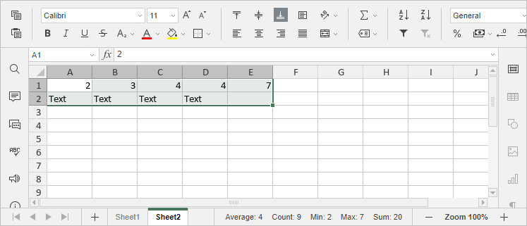
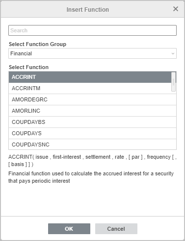
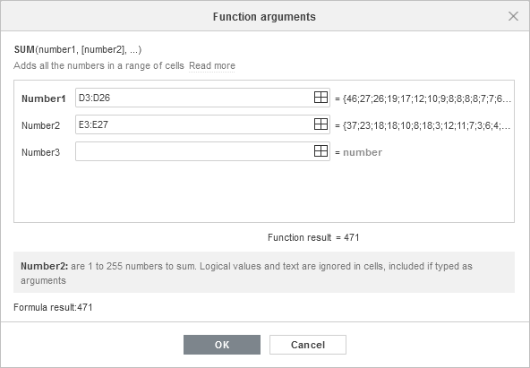
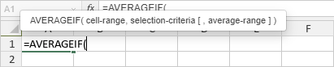

Umetanje funkcija
Mogućnost obavljanja osnovnih proračuna je glavni razlog za korišćenje Spreadsheet Editor-a. Neki od njih se izvršavaju automatski kada izaberete opseg ćelija u tabeli:
- Average se koristi za analizu izabranog opsega ćelija i pronalaženje prosečne vrednosti.
- Count se koristi za brojanje izabranih ćelija koje sadrže vrednosti, ignorišući prazne ćelije.
- Min se koristi za analizu opsega podataka i pronalaženje najmanjeg broja.
- Max se koristi za analizu opsega podataka i pronalaženje najvećeg broja.
- Sum se koristi za sabiranje svih brojeva u izabranom opsegu, ignorišući prazne ćelije ili one koje sadrže tekst.
Rezultati ovih proračuna prikazuju se u donjem desnom uglu statusne trake. Statusnom trakom možete upravljati tako što ćete kliknuti desnim tasterom miša na nju i izabrati samo one funkcije koje želite da budu prikazane.

Da biste izvršili bilo koji drugi proračun, možete ručno uneti potrebnu formulu koristeći uobičajene matematičke operatore ili umetnuti unapred definisanu formulu – Function.
Mogućnosti za rad sa Functions dostupne su i na karticama Home i Formula, ili pritiskom na kombinaciju tastera Shift+F3. Na kartici Home možete koristiti dugme Insert function da dodate jednu od najčešće korišćenih funkcija (SUM, AVERAGE, MIN, MAX, COUNT) ili da otvorite prozor Insert Function koji sadrži sve dostupne funkcije klasifikovane po kategorijama. Koristite polje za pretragu da pronađete tačnu funkciju po nazivu.

Na kartici Formula možete koristiti sledeća dugmad:

- Function - otvara prozor Insert Function koji sadrži sve dostupne funkcije klasifikovane po kategorijama.
- Autosum - omogućava brz pristup funkcijama SUM, MIN, MAX, COUNT. Kada izaberete funkciju iz ove grupe, ona automatski obavlja proračune za sve ćelije u koloni iznad izabrane ćelije tako da ne morate da unosite argumente.
- Recently used - omogućava brz pristup za 10 poslednje korišćenih funkcija.
- Financial, Logical, Text and data, Date and time, Lookup and references, Math and trigonometry - omogućavaju brz pristup funkcijama koje pripadaju odgovarajućim kategorijama.
- More functions - omogućava pristup funkcijama iz sledećih grupa: Database, Engineering, Information i Statistical.
- Named ranges - otvara Name Manager, ili definiše novi naziv, ili umeće naziv kao argument funkcije. Za više detalja, pogledajte ovu stranicu.
- Trace Precedents - prikazuje strelice koje označavaju koje ćelije utiču na vrednost izabrane ćelije.
- Trace Dependents - prikazuje strelice koje označavaju na koje ćelije utiče vrednost izabrane ćelije.
- Remove Arrows - uklanja strelice koje se koriste za precedents i dependents. Kliknite na strelicu pored opcije Remove Arrows da izaberete da li želite da uklonite sve strelice, strelice precedents ili strelice dependents.
- Show Formulas - prikazuje formule u ćelijama umesto konačnih rezultata formula.
- Watch Window - prikazuje promene u ćelijama koje trenutno nisu u vidljivom području radnog lista. Da biste saznali više o Watch Window opciji, pročitajte sledeći članak.
- Calculation - primorava program da ponovo izračuna funkcije.
Kako primeniti funkcije
Da biste umetnuli funkciju,
- Izaberite ćeliju u koju želite da umetnete funkciju.
- Nastavite na jedan od sledećih načina:
- prebacite se na karticu Formula i koristite dugmad dostupna na gornjoj traci sa alatkama da pristupite funkciji iz određene grupe, zatim kliknite na potrebnu funkciju da otvorite čarobnjak Function Arguments. Takođe možete koristiti opciju Additional iz menija ili kliknuti na dugme Function na gornjoj traci sa alatkama da otvorite prozor Insert Function.
- prebacite se na karticu Home, kliknite na ikonu Insert function , izaberite jednu od često korišćenih funkcija (SUM, AVERAGE, MIN, MAX, COUNT) ili kliknite opciju Additional da otvorite prozor Insert Function.
- kliknite desnim tasterom miša unutar izabrane ćelije i izaberite opciju Insert Function iz kontekstnog menija.
- kliknite na ikonu ispred trake formule.
- U otvorenom prozoru Insert Function, unesite naziv u polje za pretragu ili izaberite potrebnu grupu funkcija, zatim izaberite željenu funkciju sa liste i kliknite OK.
Kada kliknete na potrebnu funkciju, otvoriće se prozor Function Arguments:

-
U otvorenom prozoru Function Arguments, unesite potrebne vrednosti za svaki argument.
Argumente funkcije možete uneti ručno ili klikom na ikonu i izborom ćelije ili opsega ćelija koji će se koristiti kao argument.
Napomena: uopšteno, kao argumenti funkcije mogu se koristiti brojčane vrednosti, logičke vrednosti (TRUE, FALSE), tekstualne vrednosti (moraju biti pod navodnicima), reference na ćelije, reference na opseg ćelija, nazivi dodeljeni opsezima i druge funkcije.
Rezultat funkcije biće prikazan ispod.
- Kada su svi argumenti navedeni, kliknite na dugme OK u prozoru Function Arguments.
Da biste ručno uneli funkciju pomoću tastature,
- Izaberite ćeliju.
- Unesite znak jednakosti (=).
Svaka formula mora početi znakom jednakosti (=).
- Unesite naziv funkcije.
Kada unesete početna slova, prikazaće se lista Formula Autocomplete. Dok kucate, u njoj se prikazuju stavke (formule i nazivi) koje odgovaraju unetim karakterima. Ako zadržite pokazivač miša iznad formule, prikazaće se oblačić sa opisom formule. Možete izabrati potrebnu formulu sa liste i ubaciti je klikom na nju ili pritiskom na taster Tab.
- Unesite argumente funkcije ručno ili prevlačenjem izaberite opseg ćelija koji će biti uključen kao argument. Ako funkcija zahteva više argumenata, oni moraju biti razdvojeni zarezima.
Argumenti moraju biti u zagradama. Otvorena zagrada '(' se automatski dodaje ako izaberete funkciju sa liste. Kada unosite argumente, prikazuje se i oblačić koji sadrži sintaksu formule.

- Kada su svi argumenti navedeni, unesite zatvorenu zagradu ')' i pritisnite Enter.
Ako unesete nove podatke ili promenite vrednosti koje se koriste kao argumenti, preračunavanje funkcija se podrazumevano obavlja automatski. Možete naterati program da preračuna funkcije pomoću dugmeta Calculation na kartici Formula. Kliknite na dugme Calculation da preračunate celu radnu svesku, ili kliknite na strelicu ispod dugmeta i izaberite potrebnu opciju iz menija: Calculate workbook ili Calculate current sheet.
Takođe možete koristiti sledeće kombinacije tastera: F9 za preračunavanje radne sveske, Shift +F9 za preračunavanje trenutnog radnog lista.
Ovde je lista dostupnih funkcija grupisanih po kategorijama: